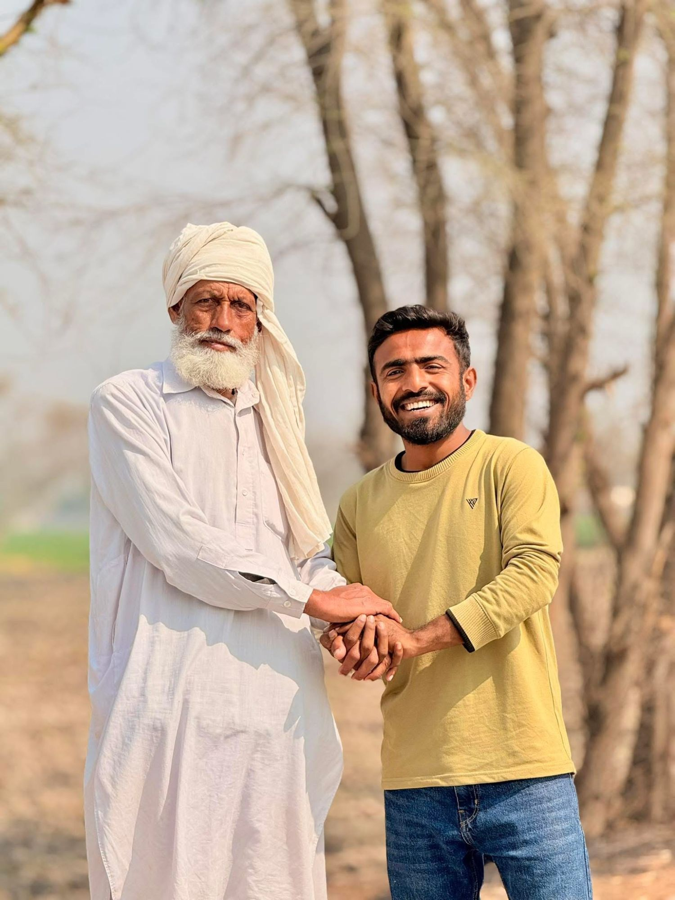
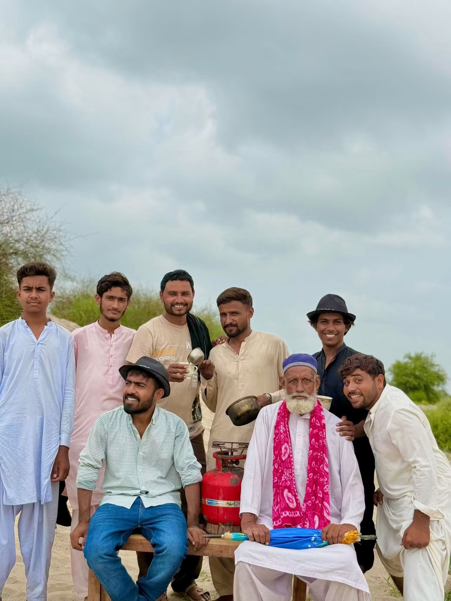

Watch Adalat
Watch AdalatHow it happened
-
2020
A phone and no audience
He starts making videos on his own. Nobody is watching yet. He posts anyway.
-

2023
All in on YouTube
He commits to a schedule and works at it every day. The numbers stay small. He changes the format instead of quitting.
-
2024
TikTok
The Gujjar trend and movie dialogues take over Pakistani TikTok. Kashi does them his way. The videos blow up, and soon other creators are lip-syncing his audio.
-
Then
Adalat
A second account, Mr. Malik Kashi 2, for videos over a minute long. Slow at first. Then the courtroom videos hit: 20 to 25 million views on single episodes, and the account passes two million followers.
-

Now
Seven people and longer films
Three-minute comedies, short films like The Last Door, vlogs and the characters. Seven people now make the videos with him.